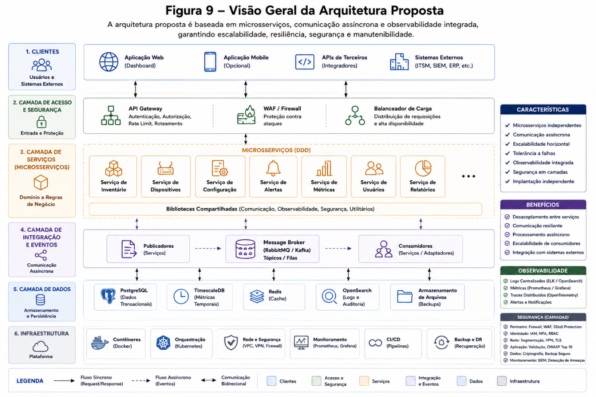

Plataforma de gerenciamento centralizado multivendor
Visao operacional
offline
Mapa logico
Sites, fabricantes e adaptadores
Eventos recentes
Fluxo assíncrono
Observabilidade
Saude da plataforma
API Gateway
42 ms
Device Service
99.94%
Mensageria
860 msg/min
OpenSearch
1.2M logs
Modelo canonico
0 itens
Inventario de dispositivos
| Hostname | IP | Fabricante | Site | Status | CPU | Backup |
|---|
NOC
Fila de alarmes
Jobs
Automacoes operacionais
Conversao
Payload para modelo canonico
C4 / UML
Diagramas extraidos do TCC

Responsabilidades
Layered + Broker
ApresentacaoPortal Web, dashboards e APIs REST
AplicacaoCasos de uso, orquestracao e auditoria
DominioDevice, Site, Alarm, Metric, Job e Tenant
PersistenciaPostgreSQL, TimescaleDB, Redis e OpenSearch
BrokerRoteamento assíncrono para adaptadores
Identidade corporativa
Integracao com Active Directory, LDAP, Azure AD, Keycloak ou Okta.
Papeis operacionais
Administrador global, administrador de rede, operador NOC, auditor e leitura.
Credenciais protegidas
Tokens e senhas de equipamentos isolados em Vault, Secrets Manager ou Kubernetes Secrets.
Rastreabilidade
Login, mudancas de configuracao, criacao de usuarios e automacoes ficam registrados.
Auditoria
Acoes registradas
| Horario | Ator | Papel | Acao | Status | Detalhes |
|---|